Biossíntese de Aminoácidos, Nucleotídeos e Moléculas Relacionadas
27/11/2026
22 | Biossíntese de Aminoácidos, Nucleotídeos e Moléculas Relacionadas

© 2017 W. H. Freeman and Company
CAPÍTULO 22 — Biossíntese de Aminoácidos, Nucleotídeos e Moléculas Relacionadas
Objetivos de aprendizagem:
- Fixação de nitrogênio
- Incorporação de amônia em biomoléculas
- Biossíntese de aminoácidos
- Biossíntese e degradação do heme
- Biossíntese de nucleotídeos
- Catabolismo de purinas
Importância do nitrogênio na bioquímica
- O nitrogênio (com H, O e C) é um importante constituinte elementar dos organismos vivos.
- Principalmente em ácidos nucleicos e proteínas
- Mas também encontrado em:
- vários cofatores (NAD, FAD, biotina…)
- muitos hormônios pequenos (epinefrina)
- muitos neurotransmissores (serotonina)
- muitos pigmentos (clorofila)
- muitas substâncias químicas de defesa (amanitina)
Bioquímica do nitrogênio molecular
- A atmosfera é 80% N2, mas em forma não utilizável
- N2 é quimicamente inerte
necessita de N2 + 3 H2 → 2 NH3
- Embora ΔG′°= –33,5 kJ/mol… quebrar uma ligação tripla tem alta energia de ativação.
- pode ser realizado usando processos não biológicos:
N2 e O2 → NO via relâmpagos
N2 e H2 → NH3 via processo industrial Haber
requer T>400°C, P>200 atm
Alguns organismos podem “fixar” o N2
em formas úteis
- A maioria são procariotos unicelulares (arquéias).
- Alguns vivem em simbiose com plantas.
- (por exemplo, proteobactérias com leguminosas como amendoim, feijão)
- Alguns vivem em simbiose com animais.
- (por exemplo, espiroqueta com cupins)
Eles têm enzimas que superam a alta energia de ativação ligando e hidrolisando ATP.
Impacto mais amplo da compreensão da fixação de nitrogênio
- A síntese industrial de NH3 via processo Haber é um dos processos químicos mais significativos da humanidade.
- tornou possível o fertilizante químico!
- produz mais de 100 milhões de toneladas de fertilizante anualmente
- sustenta a vida de mais de um terço da população humana na Terra
- consome energia não renovável (1–2% da energia anual total)
- Imitar a fixação biológica de nitrogênio (fixação de nitrogênio biomimética) pode gerar economias significativas de energia, ou permitir o uso de fontes de energia renováveis.
Revisão: Estados de oxidação de compostos de nitrogênio
O ciclo do nitrogênio
- Transformações químicas mantêm um equilíbrio entre N2 e formas biologicamente úteis de nitrogênio.
- Fixação. Bactérias reduzem N2 a NH3/NH4+.
- Nitrificação. Bactérias oxidam amônia em nitrito (NO2–) e nitrato (NO3–).
- Assimilação. Plantas e microrganismos reduzem NO2– e NO3– a NH3 via nitrito redutases e nitrato redutases.
- NH3 é incorporada em aminoácidos, e assim por diante.
- Organismos morrem, retornando NH3 ao solo.
- Bactérias nitrificantes novamente convertem NH3 em nitrito e nitrato.
- Desnitrificação. O nitrato é reduzido a N2 em condições anaeróbias.
- NO3– é o aceptor final de elétrons em vez do O2.
O ciclo do nitrogênio

Duas enzimas importantes na assimilação de nitrogênio
- Nitrato redutase NO3– + 2 e– → NO2–
- proteína grande e solúvel
- contém cofator Mo novo
- e– do NADH

Duas enzimas importantes na assimilação de nitrogênio
- Nitrito redutase NO2– + 6 e– → NH4+
- encontrada em cloroplastos em plantas: e– vem da ferredoxina
- em micróbios não fotossintéticos: e– vem do NADPH

A fixação de nitrogênio é realizada pelo complexo nitrogenase
- N2 + 3 H2 = 2 NH3
- exergônica (ΔG° = –33,5 kJ/mol), mas muito lenta devido à alta energia de ativação da ligação tripla
- O complexo nitrogenase usa ATP para superar a energia de ativação.
- Passa elétrons para N2 e catalisa uma redução gradual de N2 a NH3
- N2 + 8 H+ + 8 e– + nATP = 2 NH3 + H2 + nADP + nPi
- 2 NH3 + 2 H+ = 2 NH4+
- Cerca de 16 moléculas de ADP são consumidas por um N2.
Enzimas e cofatores no complexo nitrogenase
A fonte de e– varia entre organismos.
frequentemente piruvato → ferredoxina
- A hidrólise de ATP e a ligação de ATP ajudam a superar a alta energia de ativação.
- Tem regiões homólogas a proteínas ligantes de GTP usadas na sinalização
- Tem cofator FeMo novo (ou V em alguns organismos)

O cofator Fe-Mo na subunidade dinitrogenase
- Consiste em:
- 9 átomos de S
- 1 átomo de Mo
- 1 homocitrato ligado
- O nitrogênio se liga ao centro da gaiola Mo-FeS e é coordenado ao átomo de molibdênio.
- Os elétrons são passados para o nitrogênio ligado ao molibdênio via o complexo ferro-enxofre.
Os cofatores de transferência de elétrons

Fixação de nitrogênio pelo complexo nitrogenase
- O piruvato passa e– para ferredoxina ou flavodoxina.
- Ferredoxina ou flavodoxina passam e– para dinitrogenase redutase.
- A redutase passa e– para dinitrogenase.
- Dinitrogenase passa e– para o nitrogênio (ou para prótons) para produzir NH3.
- A formação de H2 parece ser uma reação lateral obrigatória.

Reações redox na dinitrogenase
- A reação líquida do complexo nitrogenase:
- N2 + 8 H+ + 8 e– + 16 ATP = 2 NH3 + H2 + 16 ADP + 16 Pi
- A dinitrogenase redutase catalisa:
- transferência de 8 e– para dinitrogenase
- hidrólise de ATP com liberação de prótons
- A dinitrogenase catalisa:
- transferência de 6 e– para o nitrogênio: formação de NH3
- transferência de 2 e– para prótons: formação de H2
- O mecanismo da dinitrogenase é pouco compreendido:
- reação redox extremamente complexa que envolve vários átomos metálicos como cofatores e/ou transportadores de elétrons
- dois mecanismos plausíveis que envolvem o cofator Fe-Mo ligando-se diretamente ao N
Duas hipóteses para os intermediários da redução de N2

Bactérias fixadoras de nitrogênio em nódulos radiculares de leguminosas
- Cuida da exigência de energia e da labilidade ao O2
- As bactérias têm acesso aos carboidratos e intermediários do CAC da planta para energia.
- As bactérias são cobertas com leghemoglobina para ligar O2 e evitar a corrupção do catalisador na dinitrogenase.
- Podem produzir mais NH3 do que a planta necessita; o excesso é liberado no solo
Nódulos fixadores de nitrogênio

Assimilação de nitrogênio versus fixação de nitrogênio
Ambos:
- São processos de transferência de elétrons
Usam cofator Mo
Envolvem múltiplos cofatores redox, como Fe-S, NADH, NADPH, ferredoxina, flavodoxina, e assim por diante
Converte N2 em NH3
Requer múltiplos ATP
Usa elétrons do piruvato
Converte NO3 ou NO2 em NH3
Usa elétrons do NADH, NADPH ou transferência fotossintética da ferredoxina
As reações anammox
Oxidação anaeróbia de amônia
- Habilidade recém-descoberta de algumas bactérias de oxidar NH3 e NO2– em N2
- “Curto-circuita” o ciclo do nitrogênio (sem desnitrificação)
- Usada no tratamento de resíduos para remoção mais barata de amônia
Características surpreendentes das reações anammox
- As bactérias são do filo incomum Planctomycetes
- têm DNA encerrado em membrana
usam hidrazina (N2H4) → (combustível de foguete), tóxica, reativa, apolar e difunde-se através de membranas
- Fosfolipídios feitos de ladderanos
- As cadeias de ácidos graxos contêm anéis de ciclobutano que se empilham firmemente e retardam a difusão de N2H2.
A amônia é incorporada em biomoléculas através de Glu e Gln
A glutamina é produzida a partir de Glu pela glutamina sintetase em um processo de duas etapas.
A fosforilação de Glu cria um bom grupo de saída que pode ser facilmente deslocado pela amônia.
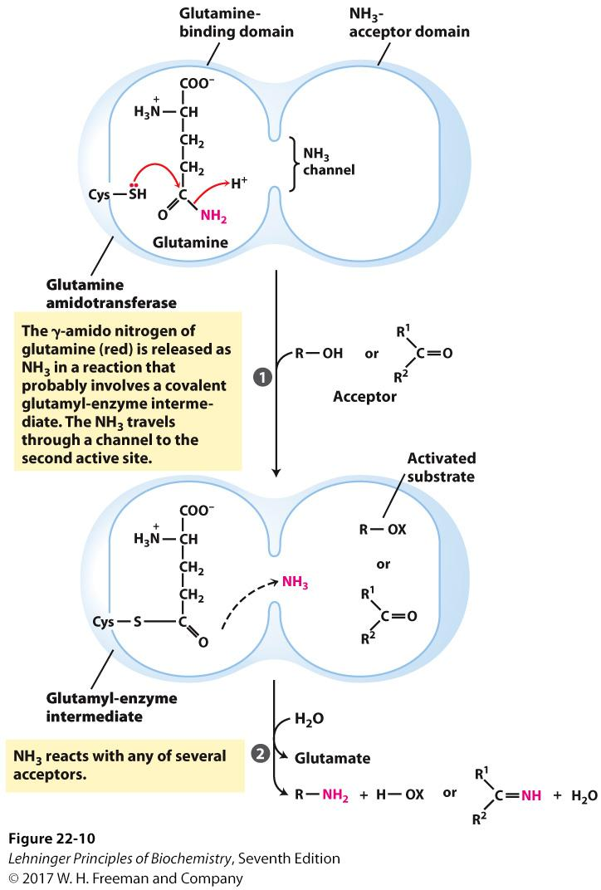
Adenililação da glutamina sintetase
- A adenililação (ligação de AMP) à Tyr-397 auxilia na inibição.
- Aumenta a sensibilidade aos inibidores
- Parte de uma cascata complexa que depende de [Glu], [α-cetoglutarato], [ATP] e [Pi]
- Atividade da adenililtransferase regulada pela ligação à proteína reguladora PII
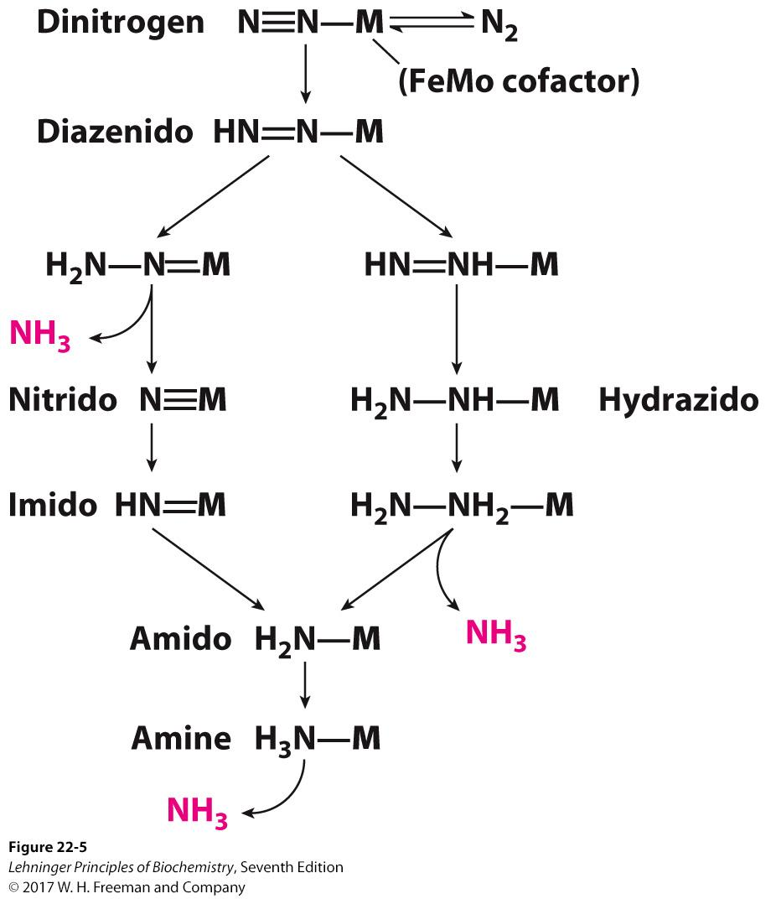
PII é regulada por uridililação
- (Lembre-se de que PII regula a adenililtransferase, que ajuda a inibir a Gln sintetase.)
- Quando PII é uridililada, a adenililtransferase estimula a desadenililação da Gln sintetase (aumentando a atividade desta última).
- ALÉM DISSO, PII uridililada regula positivamente a transcrição da Gln sintetase.
Biossíntese de aminoácidos e nucleotídeos ― Múltiplas transaminações
- Transaminações e rearranjos usando piridoxal fosfato (PLP)
- PLP é a forma ativa da vitamina B6
- Catalisadas por amidotransferases
- PLP tem grupo aldeído que forma base de Schiff com Lys da aminotransferase

Mecanismo proposto para glutamina amidotransferases
- Dois domínios:
- um liga Gln
- outro é aceptor de grupo amino e liga o substrato
- Cys atua como nucleófilo para clivar a ligação amida da Gln
→ Forma intermediário glutamil-enzima
Então o segundo substrato se liga para aceitar o grupo amino da enzima
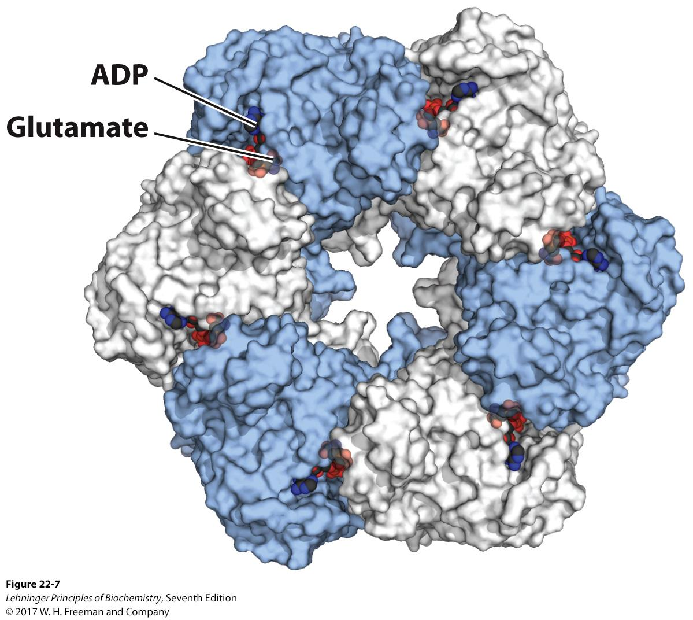
Visão geral da síntese de aminoácidos
- Fonte de N é Glu ou Gln
- Derivam de intermediários de:
- glicólise
- ciclo do ácido cítrico
- via das pentoses fosfato
- Bactérias podem sintetizar todos os 20.
- Mamíferos requerem alguns na dieta.
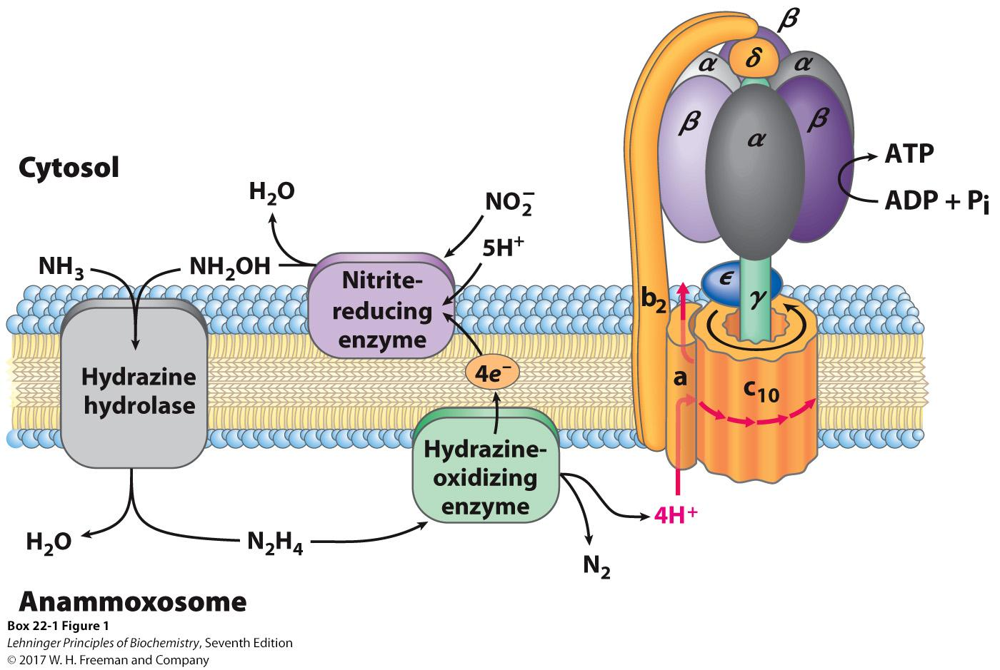
Todos os aminoácidos derivam de um de sete precursores
- CAC:
- α-cetoglutarato, oxaloacetato
- Glicólise
- piruvato, 3-fosfoglicerato, fosfoenolpiruvato
- Via das pentoses fosfato
- ribose 5-fosfato, eritrose 4-fosfato
Prolina e arginina derivam do glutamato
O glutamato é derivado da transaminação do α-cetoglutarato, como visto no Capítulo 18.
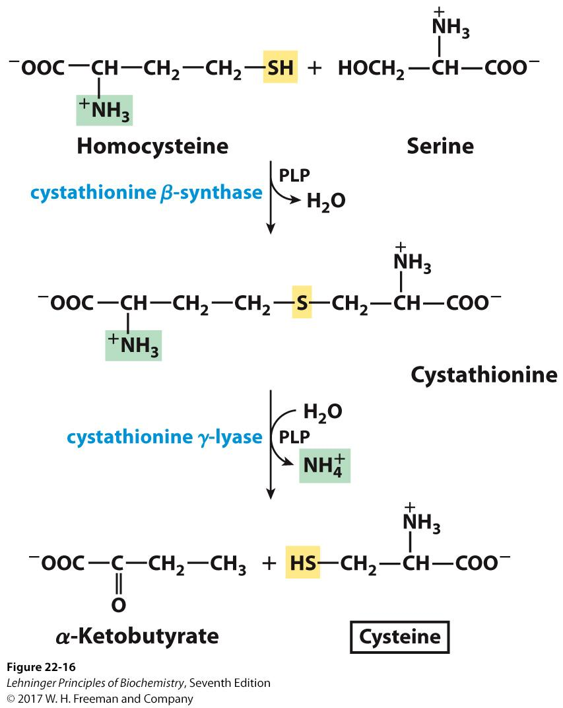
Biossíntese de Pro e Arg a partir de Glu em bactérias
- O ATP reage com o grupo γ-carboxil → acil fosfato.
- NADPH ou NADH reduz o acil fosfato a um semialdeído que cicliza rapidamente.
- A etapa final de redução produz prolina.

Em animais, a prolina TAMBÉM pode ser sintetizada a partir de arginina
- A ornitina é derivada do ciclo da ureia ou da degradação da arginina.
- A ornitina δ-aminotransferase converte ornitina em glutamato γ-semialdeído que cicliza e se converte em Pro.
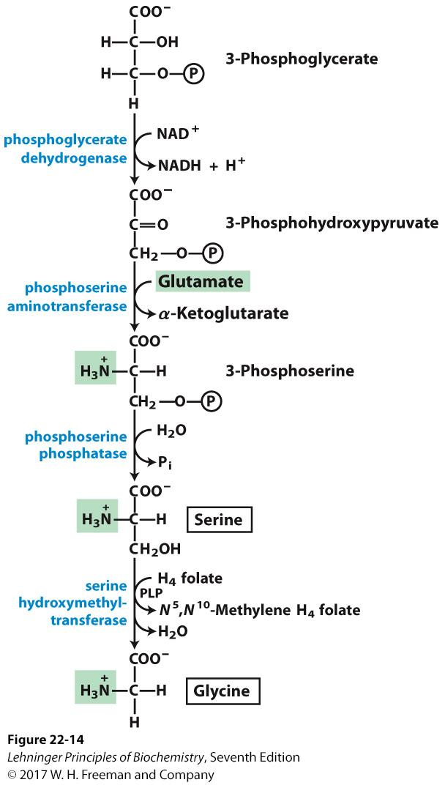
A arginina é sintetizada a partir de ornitina em animais
A ornitina vem do ciclo da ureia.
Em bactérias, a ornitina tem uma via de síntese especial.
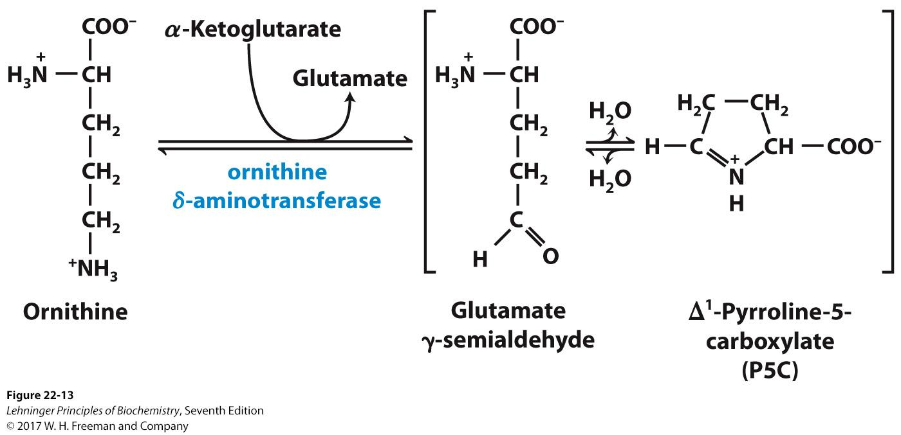
A serina deriva do 3-fosfoglicerato da glicólise
- Mesma via em todos os organismos até agora
- Requer Glu como fonte do grupo NH2
Oxidação → transaminação → desfosforilação para produzir serina
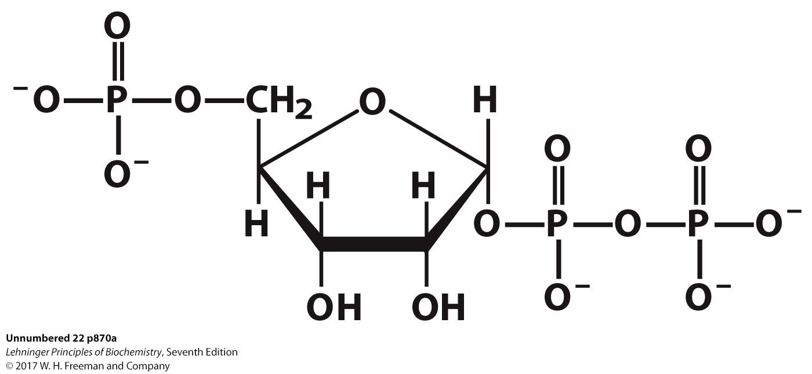
A glicina deriva da serina
- O carbono é removido usando tetraidrofolato (H4 folato) para aceitar o átomo de C e piridoxal fosfato (PLP)
- A reação usa serina hidroximetiltransferase
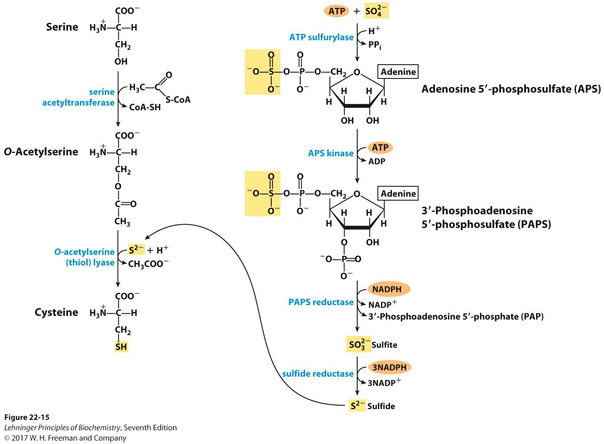
A cisteína também deriva da serina
Em bactérias e plantas, os sulfatos são a fonte de S.
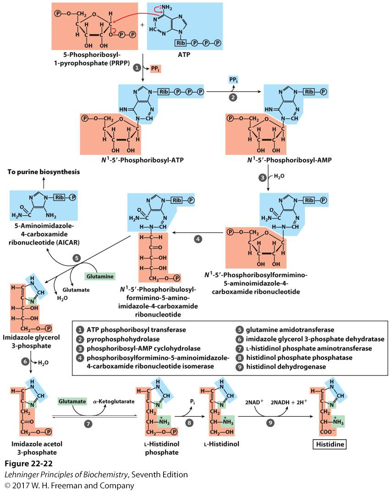
Biossíntese de Cys a partir de homocisteína e Ser em mamíferos
Em mamíferos, o enxofre é reciclado da degradação da metionina.
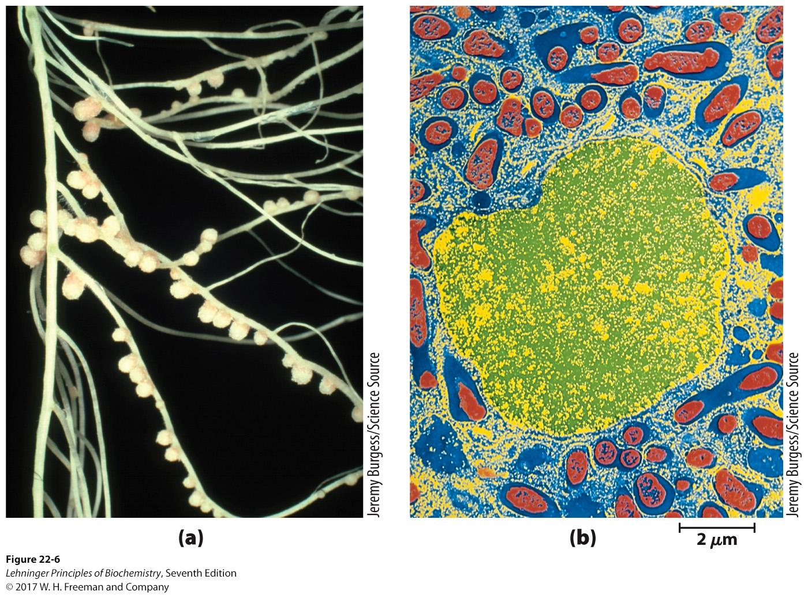
Oxaloacetato produz Asp, que produz Asn, Met, Lys e Thr
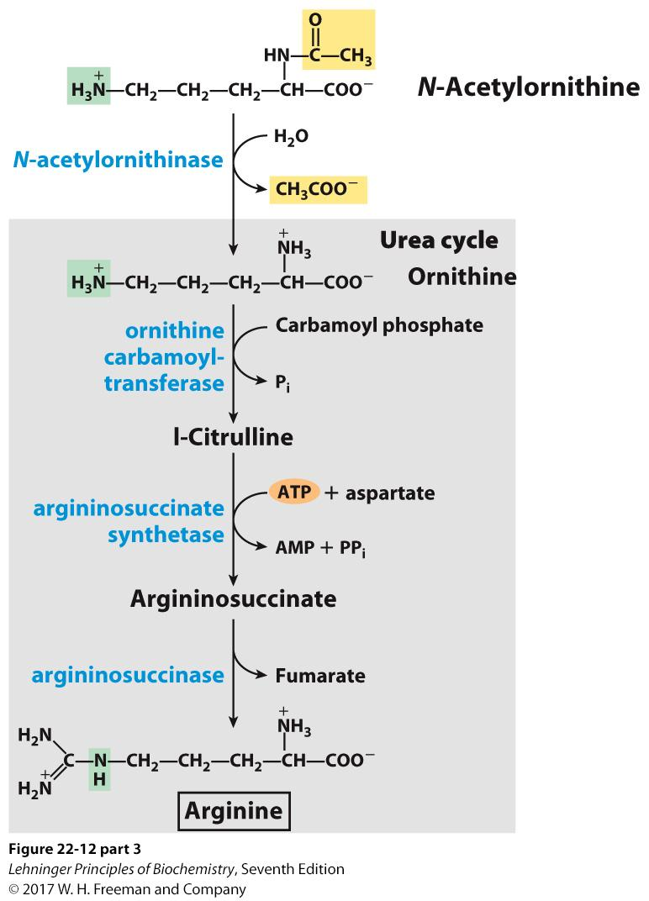
Oxaloacetato produz Asp, que produz Asn, Met, Lys e Thr
- Consulte a Figura 22-17.
- O aspartato é formado pela transaminação do oxaloacetato.
- O aspartato é a raiz dos outros aminoácidos.
Aminoácidos aromáticos derivam de fosfoenolpiruvato e eritrose 4-fosfato
- Química muito complicada!
- Os anéis devem ser sintetizados e fechados e depois oxidados para criar ligações duplas.
- O corismato é um intermediário comum.
Biossíntese de corismato, um intermediário-chave na biossíntese de aminoácidos aromáticos
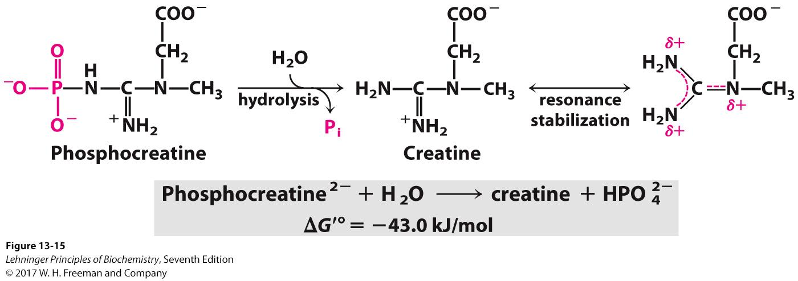
Várias vias compartilham 5-fosforribosil-1-pirofosfato (PRPP) como intermediário
- Sintetizado a partir de ribose 5-fosfato da PPP via ribose fosfato pirofosfoquinase
- uma enzima alostérica altamente regulada
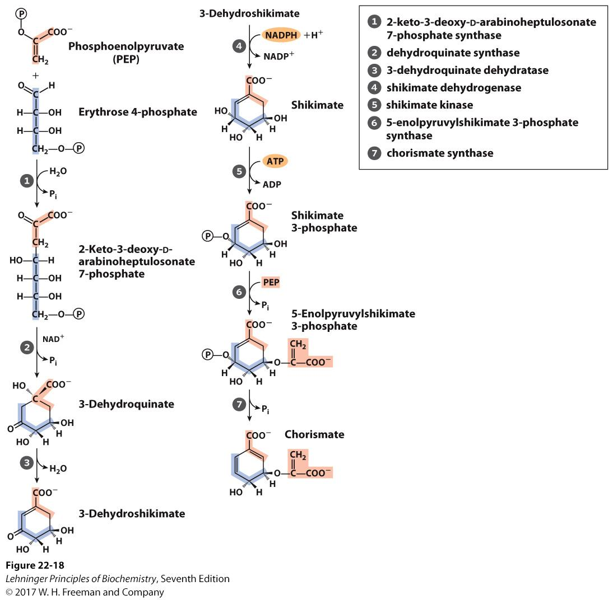
Regulação da biossíntese de aminoácidos
- Abordagem em múltiplas camadas: Frequentemente, mais de um mecanismo de regulação é utilizado.
- inibição por retroalimentação dos produtos
- uso de isoenzimas para regulação de vias específicas
Inibição por retroalimentação na síntese de Ile a partir de Thr
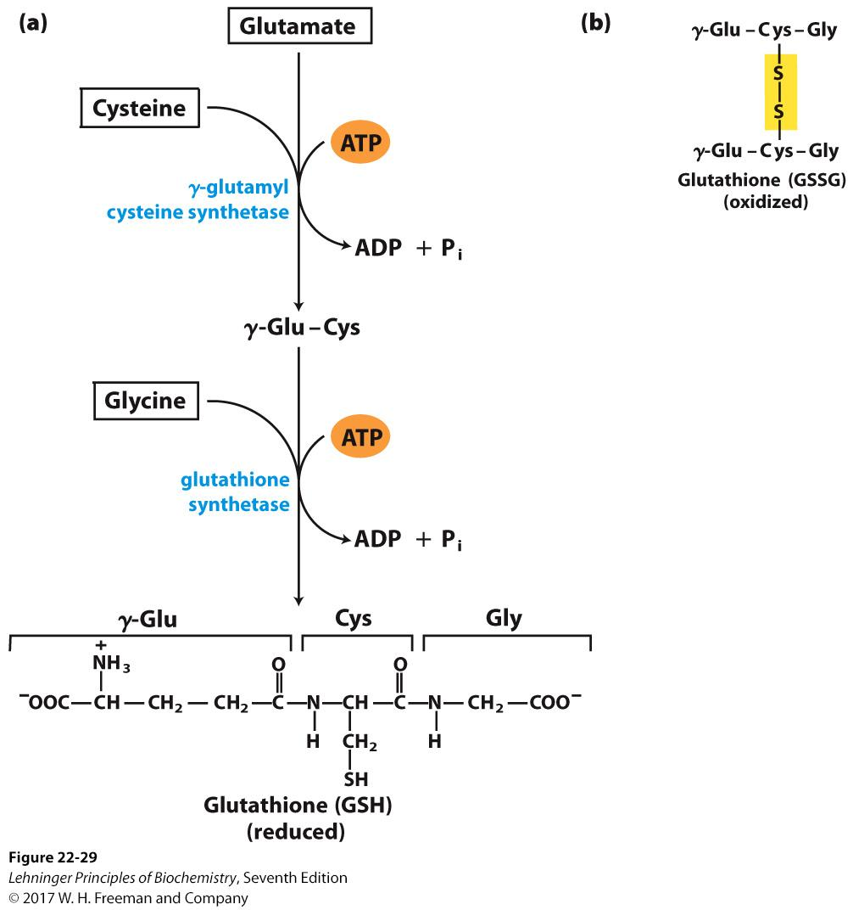
O uso de isoenzimas é outro meio importante de regulação
Exemplo: Asp pode levar a Lys, Met, Thr e Ile. O uso de isoenzimas, todas reguladas por diferentes efetores, permite que E. coli produza os aminoácidos quando necessário.
Exemplo: Na etapa 1, a isoenzima A1 é inibida se Ile estiver alta, mas não se Met ou Thr estiverem altas.
Apenas a isoenzima A1 é inibida por Ile nesta etapa.
Glicina ou glutamato é o precursor
- das porfirinas
- A porfirina compõe o heme da hemoglobina, citocromos, mioglobina.
- Em animais superiores, a porfirina surge da reação da glicina com succinil-CoA.
- Em plantas e bactérias, o glutamato é o precursor.
- A via gera duas moléculas do importante intermediário δ-aminolevulinato.
- O porfobilinogênio é outro intermediário importante.
Síntese de δ-aminolevulinato em eucariotos superiores
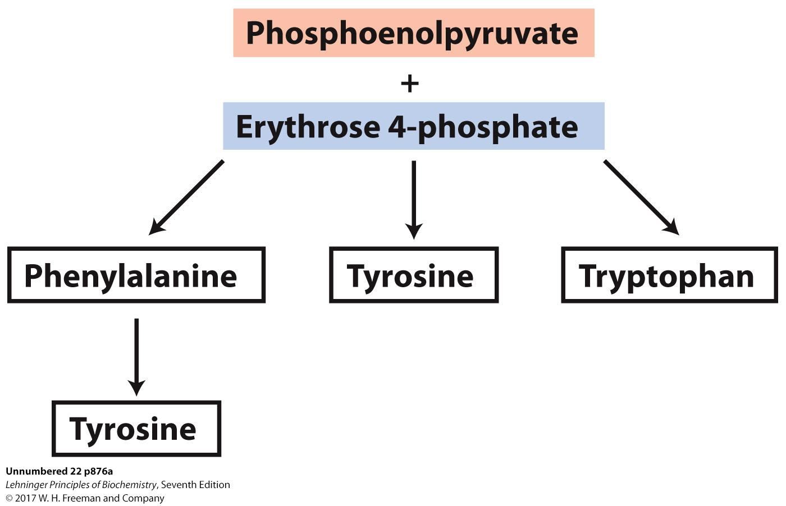
Síntese de δ-aminolevulinato em plantas e bactérias
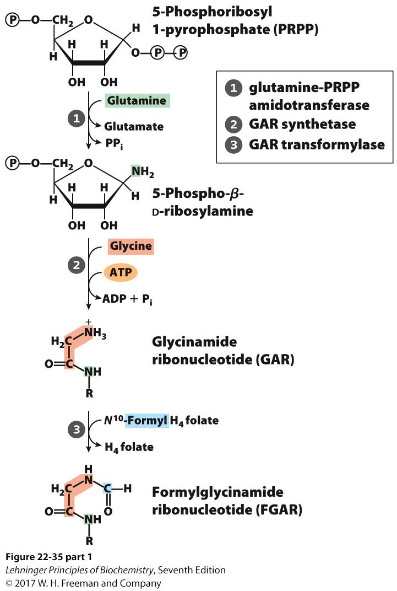
Síntese de heme a partir de
- δ-aminolevulinato
- Duas moléculas de δ-aminolevulinato condensam para formar porfobilinogênio.
- Quatro moléculas de porfobilinogênio se combinam para formar protoporfirina.
- O íon Fe é inserido na protoporfirina com a enzima ferroquelatase.
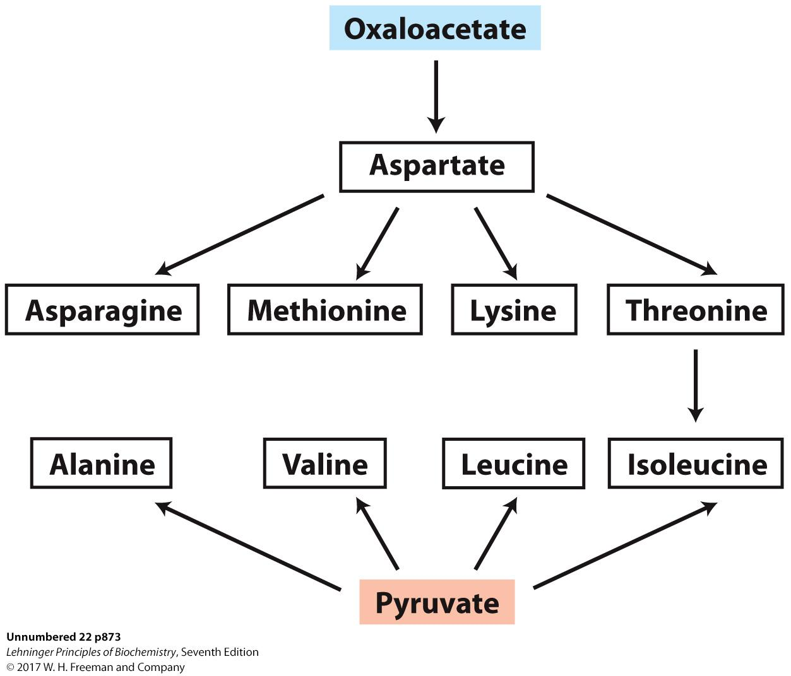
Defeitos na biossíntese de heme
- A maioria dos animais sintetiza seu próprio heme.
- Mutações ou desregulação de enzimas na via de biossíntese de heme levam a porfirias.
- Precursores se acumulam em glóbulos vermelhos, fluidos corporais e fígado.
- Acúmulo do precursor uroporfirinogênio I
- A urina fica descolorida (rosa a púrpura escuro dependendo da exposição à luz e ao calor).
- Os dentes podem mostrar fluorescência vermelha sob luz UV.
- A pele é sensível à luz UV.
- Há um desejo por heme.
- Explorado como possível base bioquímica para mitos de vampiros
O heme é a fonte dos pigmentos biliares
- O heme da degradação de eritrócitos é degradado em bilirrubina em duas etapas:
- A heme oxigenase lineariza o heme para criar biliverdina, um composto verde (visto em um hematoma).
- A biliverdina redutase converte biliverdina em bilirrubina, um composto amarelo que viaja ligado à albumina sérica na corrente sanguínea.
- principal pigmento da urina (degradação em urobilina)
- posteriormente degradado pela microbiota intestinal em estercobilina
A icterícia é causada pelo acúmulo de bilirrubina
- A icterícia (pigmentação amarelada da pele, branco dos olhos, etc.) pode resultar de:
- fígado comprometido (em câncer de fígado, hepatite)
- secreção biliar bloqueada (devido a cálculos biliares, câncer de pâncreas)
- transferase de glucuronil bilirrubina insuficiente para processar a bilirrubina (ocorre em bebês)
- tratada com UV para causar degradação fotoquímica da bilirrubina
Gly e Arg são precursores de creatina e fosfocreatina
A fosfocreatina é hidrolisada para energia no músculo.
Gly e Arg se combinam, então a S-adenosil-metionina (Ado-Met) atua como doadora de metil.
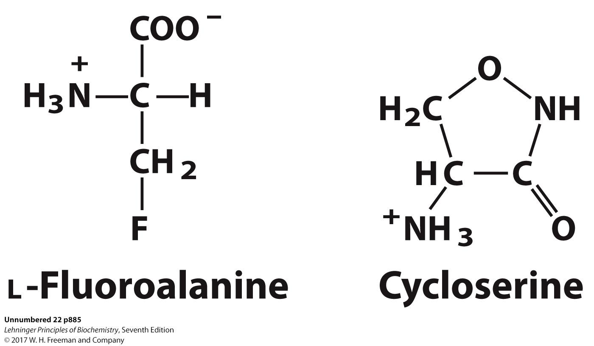
Biossíntese de creatina e fosfocreatina
Requer glicina, arginina e S-adenosil-metionina
A fosfocreatina pode ser fosforilada pelo ATP para uso como fonte de energia armazenada.
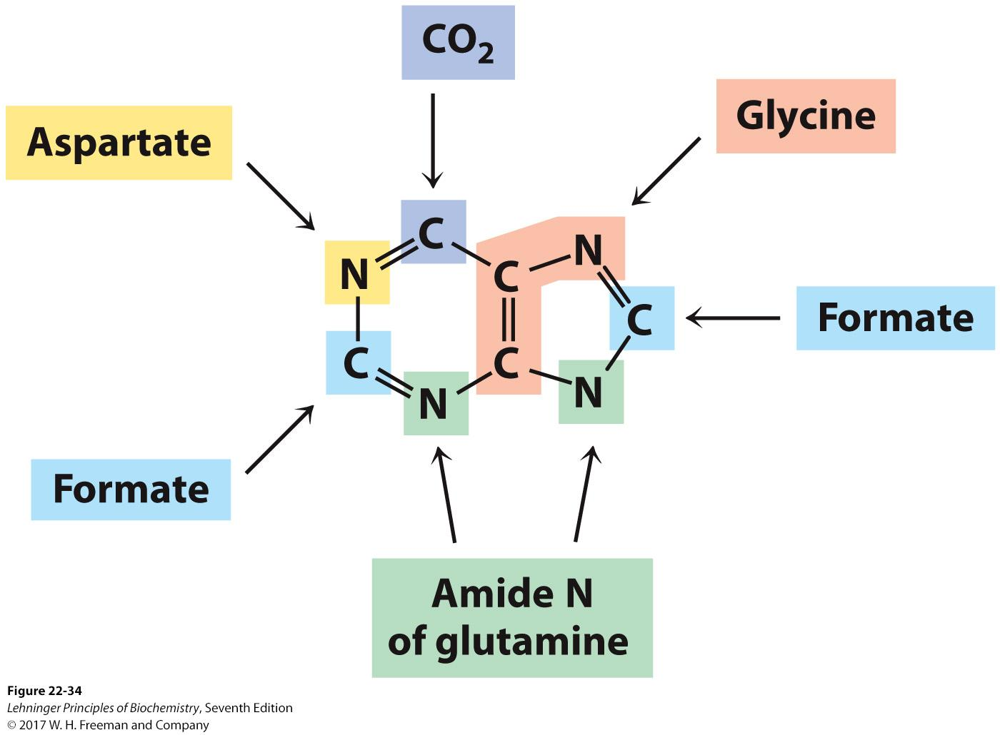
A glutationa (GSH) deriva de Glu, Cys e Gly
- A GSH está presente na maioria das células em altas quantidades.
- Agente redutor/antioxidante
- mantém proteínas e cátions metálicos reduzidos
- mantém enzimas redox no estado reduzido
- remove peróxidos tóxicos
- Oxidada a um dímero usando ligação dissulfeto (GSSG)
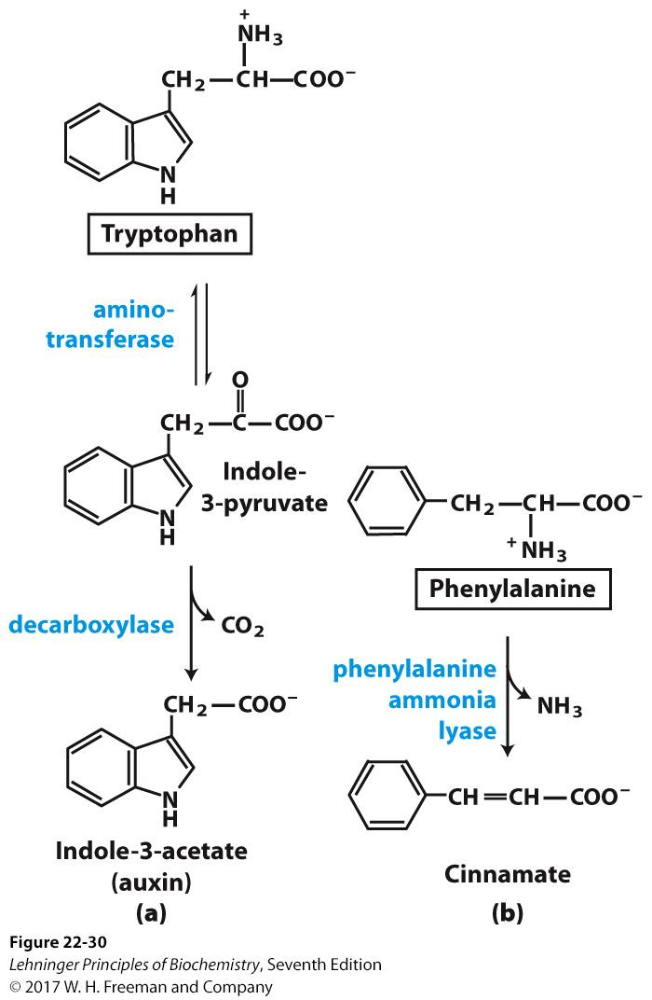
D-aminoácidos em bactérias surgem de racemases
- Os peptidoglicanos bacterianos contêm D-Al e D-Glu.
- As racemases atuam sobre D-aminoácidos e usam PLP como cofator.
- Inibidores de racemase são usados/estudados como alvos antibióticos.
- ciclosegina para tuberculose
- L-fluoroalanina como antibiótico geral
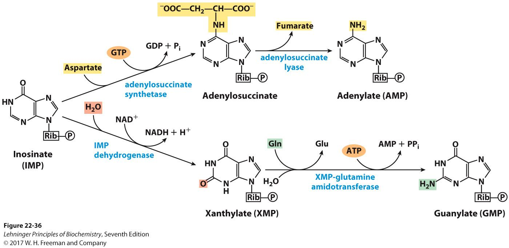
Aminoácidos aromáticos são precursores de ligninas, hormônios e produtos naturais de plantas
- Lignina (polímero rígido em plantas) de Phe e Tyr
- Auxina (hormônio de crescimento indol-3-acetato) de Trp
- Outros produtos naturais: especiarias (noz-moscada, baunilha), alcaloides (morfina), e assim por diante
Biossíntese de auxina a partir de Trp e cinamato a partir de Phe
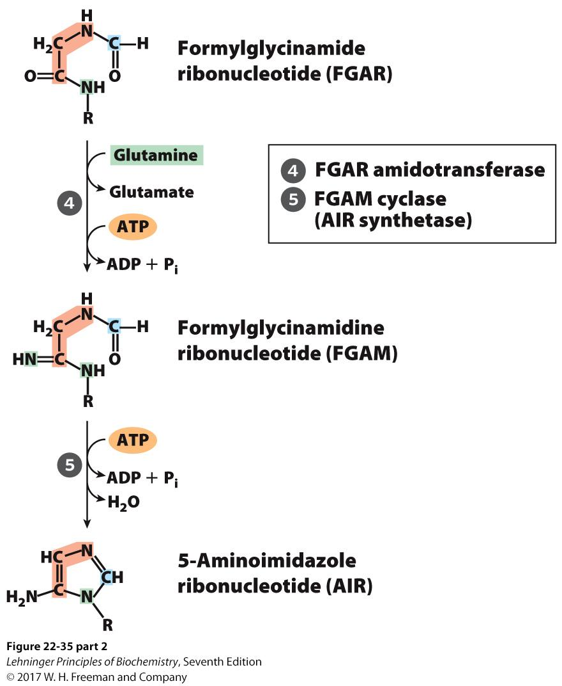
Alguns neurotransmissores são derivados de aminoácidos
Todos são descarboxilados usando enzimas dependentes de PLP.
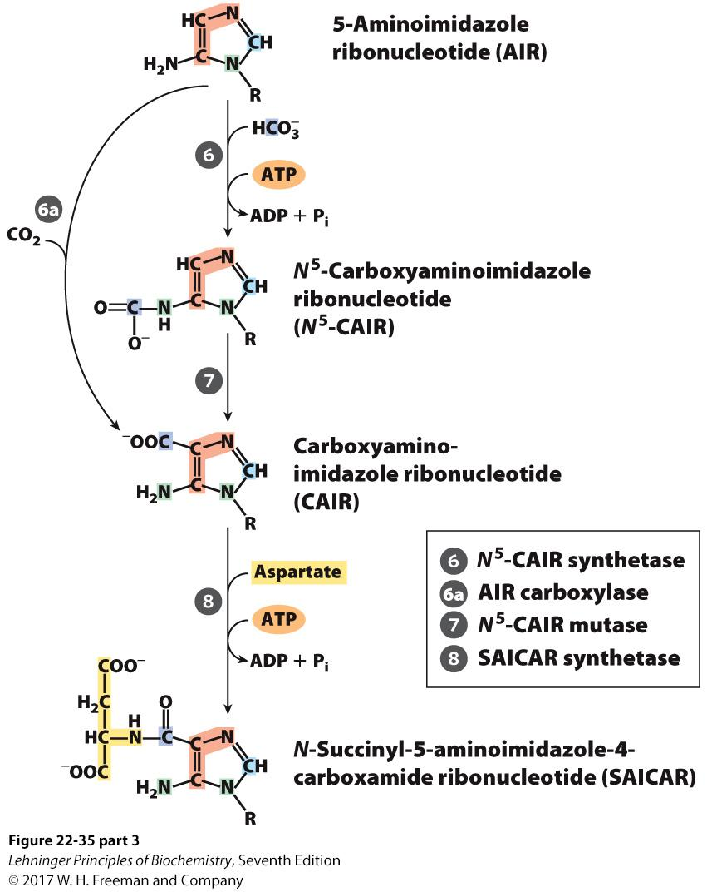
Arg é o precursor do óxido nítrico (NO)
- Descoberta em meados dos anos 80 de que o poluente NO desempenhava um papel importante na regulação da pressão arterial, coagulação sanguínea, e assim por diante
- Sintetizado a partir de Arg via óxido nítrico sintase usando NADPH
- enzima semelhante à cit P450 redutase
- estimulada pela interação com Ca2+ e calmodulina
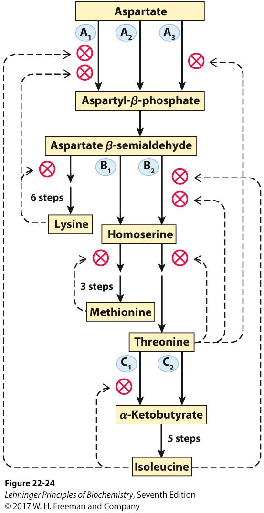
Biossíntese de nucleotídeos
- Os nucleotídeos podem ser sintetizados de novo (“do início”) a partir de aminoácidos, ribose-5-fosfato, CO2 e NH3.
- Os nucleotídeos podem ser salvos a partir de RNA, DNA e degradação de cofatores.
- Muitos parasitas (por exemplo, malária) carecem de vias de biossíntese de novo e dependem exclusivamente da via de salvação.
- Compostos que inibem as vias de salvação são drogas antiparasitárias promissoras.
Biossíntese de novo de nucleotídeos
- Aproximadamente a mesma em todos os organismos estudados
- Bases sintetizadas enquanto ligadas à ribose
- Glu fornece a maioria dos grupos amino.
- Gly é precursor de purinas
- Asp é precursor de pirimidinas
- Os pools de nucleotídeos são mantidos baixos, então as células devem sintetizá-los continuamente.
- Esta síntese pode realmente limitar as taxas de transcrição e replicação.
Síntese de AMP e GMP a partir do IMP
Observe que o ATP é usado para fosforilar o precursor de GMP, enquanto o GTP é usado para fosforilar o precursor de AMP.
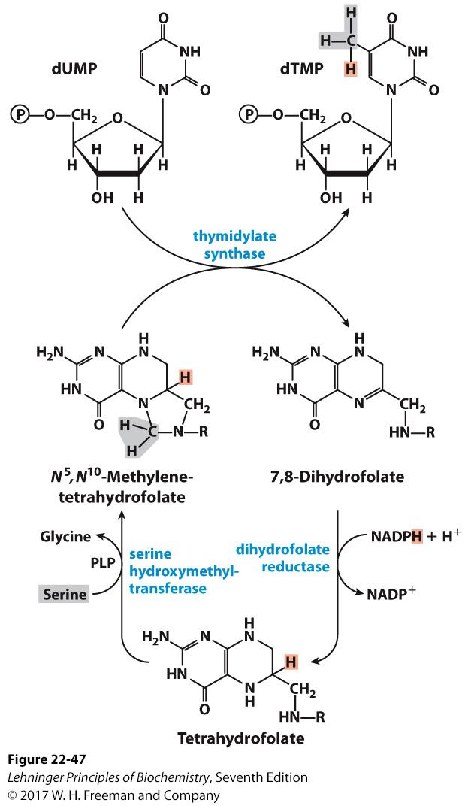
Regulação da biossíntese de purinas em E. coli consiste em grande parte em inibição por retroalimentação
- Quatro mecanismos principais
- Glutamina-PRPP amidotransferase é inibida pelos produtos finais IMP, AMP e GMP.
- O excesso de GMP inibe a formação de xantilato a partir de inosinato pela IMP desidrogenase.
- As concentrações de GMP e AMP inibem as etapas de fosforilação.
- A síntese de PRPP é inibida por ADP e GDP.
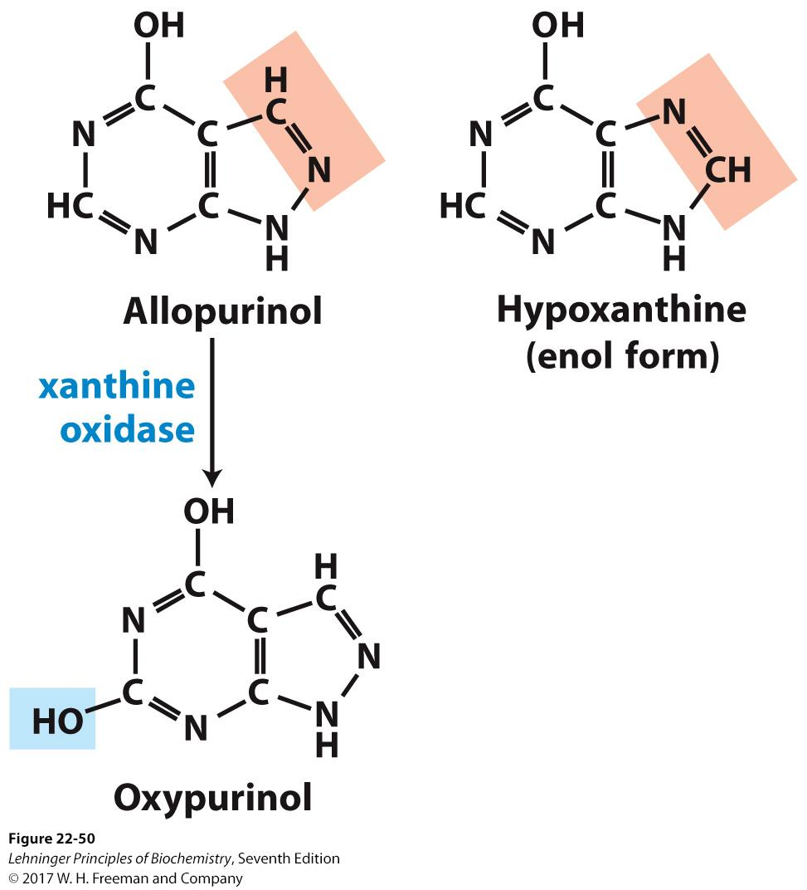
Síntese de novo de nucleotídeos de pirimidina (1)
Diferentemente da síntese de purinas, a síntese de pirimidinas prossegue primeiro fazendo o anel pirimidínico (na forma de orotato) e depois ligando-o à ribose 5-fosfato.
Aspartato e carbamoil fosfato fornecem os átomos para a estrutura do anel.
Síntese de novo de nucleotídeos de pirimidina (2)
Após a adição de ribose-5-fosfato via PRPP, o nucleotídeo resultante (orotidilato) é descarboxilado para formar uridilato (UMP), a primeira pirimidina possível.
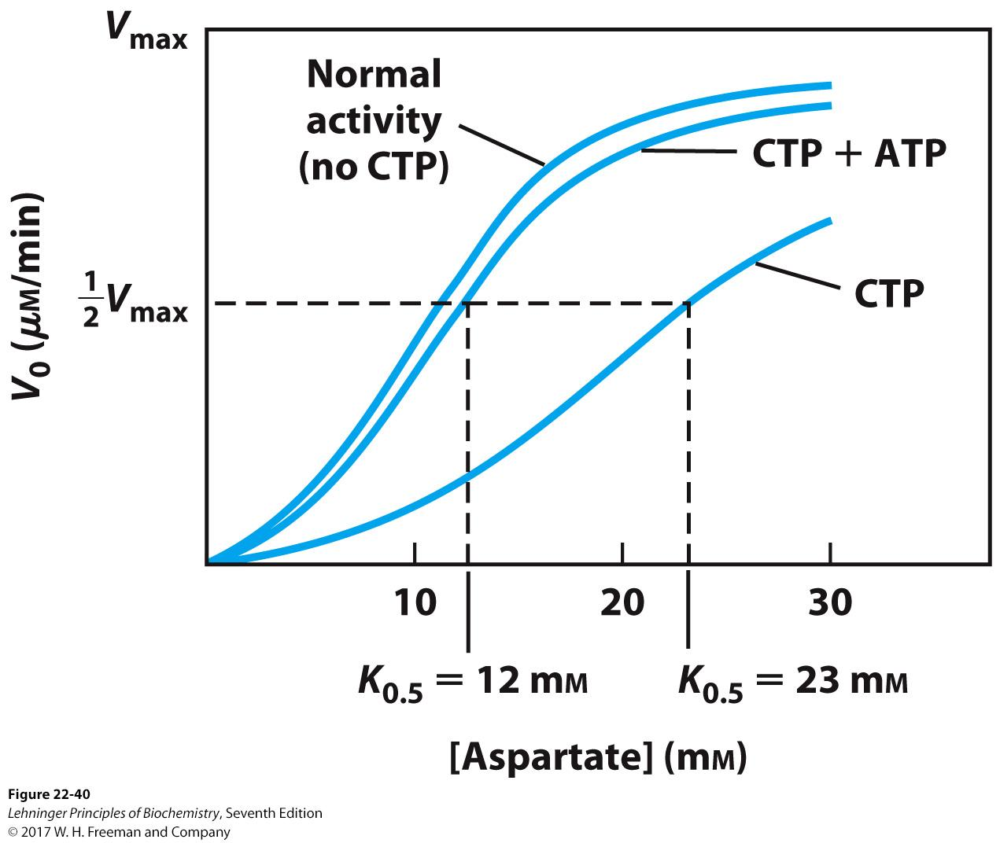
Síntese de novo de nucleotídeos de pirimidina (3)
O UMP é fosforilado a UTP.
Após a formação de UTP, a aminação pode converter UTP em CTP.
ATCase é inibida pelo produto final CTP e é acelerada pelo ATP.
A regulação da biossíntese de pirimidinas também é via inibição por retroalimentação
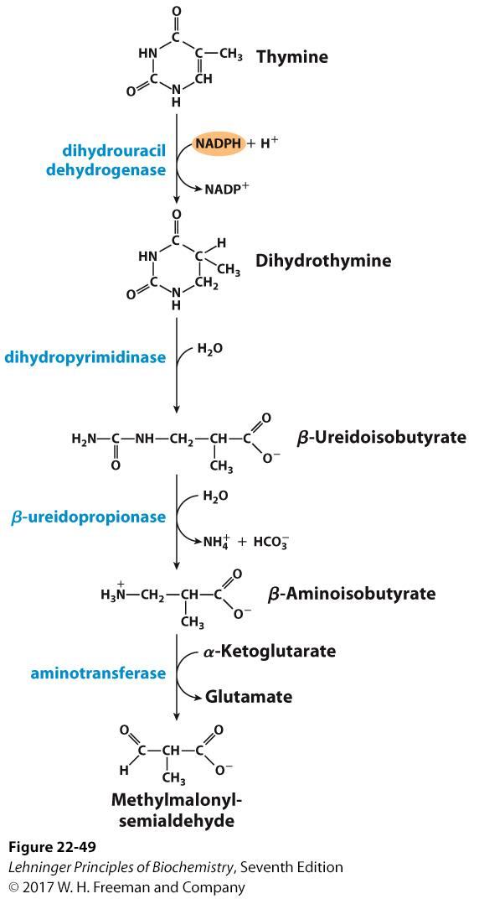
Ribonucleotídeos são precursores de desoxirribonucleotídeos
- A ligação 2’C-OH é diretamente reduzida a ligação 2’-H… sem ativar o carbono!
- catalisada por ribonucleotídeo redutase
- Mecanismo: Dois átomos de H são doados pelo NADPH e carregados pelas proteínas tiorredoxina ou glutarredoxina.
Redução de ribonucleotídeos
- pela ribonucleotídeo redutase
- NADPH serve como doador de elétrons.
Canalizado através da glutationa (a) ou vias da tiorredoxina (b)

Estrutura da ribonucleotídeo redutase
O mecanismo proposto da ribonucleotídeo redutase envolve radicais livres
- A maioria das formas da enzima tem duas subunidades catalíticas/reguladoras e duas subunidades geradoras de radicais.
- contêm Fe3+ e grupos ditiol
- a enzima cria um radical Tyr estável para abstrair H∙ do açúcar
- Um radical 3’-ribonucleotídeo se forma.
- O 2’-OH é protonado para ajudar a eliminar H2O e formar um carbocátion estabilizado por radical.
- Os elétrons são transferidos para o 2’-C.
Mecanismo proposto para a ribonucleotídeo redutase

A ribonucleotídeo redutase tem dois tipos de sítios reguladores
- Um tipo afeta a atividade.
- O outro tipo afeta a especificidade do substrato para manter pools equilibrados de nucleotídeos.
- Se ATP ou dATP altos → menos especificidade para adenina e MAIS especificidade para UDP e CDP, e assim por diante.
- A enzima oligomeriza para realizar essa mudança.
Regulação da ribonucleotídeo redutase por dNTPs

dTMP é produzido a partir de dUTP
dUMP → dTMP pela timidilato sintase
- adiciona um grupo metil do tetraidrofolato
A timidilato sintase é um alvo para algumas drogas anticâncer.
Biossíntese de dTMP

Conversão de dUMP em dTMP pela timidilato sintase

A deficiência de ácido fólico leva à síntese reduzida de timidilato
- A deficiência de ácido fólico é generalizada, especialmente em populações nutricionalmente pobres.
- A síntese reduzida de timidilato faz com que o uracilo seja incorporado ao DNA.
- Os mecanismos de reparo removem o uracilo criando quebras de fita que afetam a estrutura e a função do DNA.
- associada a câncer, doenças cardíacas, comprometimento neurológico
Catabolismo de purinas
- Desfosforilação (via 5’-nucleotidase)
- Desaminação e hidrólise da ribose levam à produção de xantina.
- Hipoxantina e xantina são então oxidadas em ácido úrico pela xantina oxidase.
Aranhas e outros aracnídeos não têm xantina oxidase.

Conversão de ácido úrico em alantoína, alantoato e ureia
O grau de oxidação adicional do ácido úrico depende do organismo.

Excesso de ácido úrico observado na gota
- Articulações dolorosas (frequentemente nos dedos dos pés) devido a depósitos de cristais de urato de sódio
- Afeta principalmente homens
- Pode envolver subexcreção genética de urato e/ou pode envolver consumo excessivo de frutose
- Tratada com evitar alimentos ricos em purinas (frutos do mar, fígado) ou evitar frutose
- Também tratada com o inibidor da xantina oxidase alopurinol
Alopurinol inibe a xantina oxidase

Catabolismo de pirimidinas
- Leva a NH4+ e ureia
- Pode produzir intermediários do CAC
Exemplo: A timina é degradada em succinil-CoA.

Bases purínicas e pirimidínicas são recicladas por vias de salvação
Bases livres, liberadas no metabolismo, são reutilizadas.
Exemplo: A adenina reage com PRPP para formar o nucleotídeo adenina AMP.
- catalisada por adenosina fosforribosiltransferase
- O cérebro é especialmente dependente das vias de salvação.
- A falta de hipoxantina-guanina fosforribosiltransferase leva à síndrome de Lesch-Nyhan com comprometimento neurológico e comportamento de morder os dedos das mãos e dos pés.
Muitos agentes quimioterápicos visam a biossíntese de nucleotídeos
- Análogos de glutamina: azaserina, acivicina
- inibem glutamina amidotransferases
- Fluorouracila
- convertida pela via de salvação em FdUMP, que inibe a timidilato sintase
- Metotrexato e aminopterina
- inibem a diidrofolato redutase (inibidores competitivos)
Antibióticos também visam a biossíntese de nucleotídeos
- Alopurinol, e assim por diante
- estudado contra a doença do sono africana (tripanossomíase) porque os tripanossomos carecem de enzimas para a síntese de nucleotídeos de novo
- Trimetoprima
- inibe a diidrofolato redutase bacteriana, mas liga-se à enzima humana várias ordens de magnitude menos fortemente
Resumo do Capítulo
Neste capítulo, aprendemos:
- métodos para ativação do nitrogênio molecular em nitratos, nitritos e amônia
- a glutamina serve como o principal doador de amônia na biossíntese de aminoácidos
- os 20 aminoácidos comuns são sintetizados a partir de α-cetoglutarato, 3-fosfoglicerato, oxaloacetato, piruvato, fosfoenolpiruvato, eritrose 4-fosfato e ribose-5-fosfato
- os nucleotídeos podem ser sintetizados de novo a partir de precursores simples, ou remontados a partir de nucleobases recicladas
- as purinas são sintetizadas sobre a ribose, enquanto os anéis de pirimidina são montados antes da ligação à ribose
- os ribonucleotídeos são construídos antes da modificação para produzir desoxirribonucleotídeos
- a via de degradação de purinas na maioria dos organismos leva ao ácido úrico, mas o destino do ácido úrico é específico da espécie